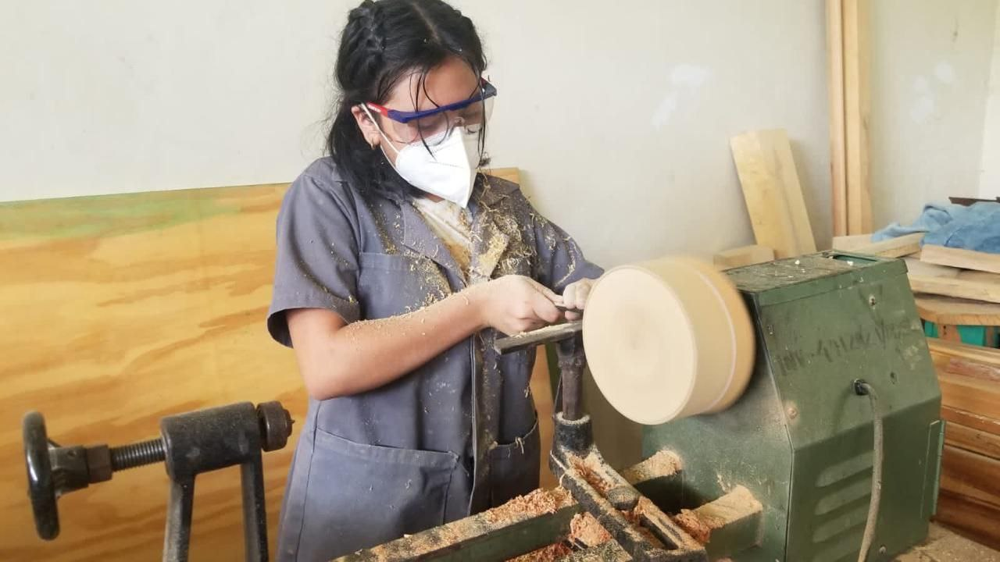

Su trabajo comprende la elaboración, montaje, instalación y reparación de elementos de madera, tanto piezas individuales (mobiliario) como componentes fijos o móviles para obras (puertas, ventanas, marcos, etc.). Normalmente, el/la carpintero/a recibe un encargo profesional y realiza sus tareas de forma autónoma, desde el diseño inicial de la pieza o construcción a fabricar hasta dejar las piezas preparadas para su posterior montaje.
Este/a profesional trabaja en carpinterías, talleres autorizados, industrias de instalación de montajes y obras en construcción o rehabilitación. Utiliza principalmente herramientas manuales (berbiquí, garlopa, destornillador, regla, nivel, cepillo, serrucho, alicates, destornilladores, formones y gubias, clavos, martillos, sierras, papel de lija y cepillos, entre otros) y herramientas mecánicas o maquinaria (afiladores, sierras de sesgos, taladros, compresores para la producción de aire comprimido y herramientas como las sierras de cinta o las sierras de mesa).
Cuando el/la carpintero/a se especializa en el diseño y fabricación artesanal de mobiliario o elementos decorativos (revestimientos, cenefas) trabajando con maderas de mayor calidad, se denomina ebanista.
\